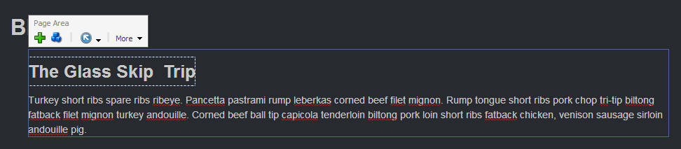

This tutorial will look at the MVC page editor support, Glass supports both editable fields and edit frames in MVC.
For this tutorial I will have a single page that lists blog posts, I want to be able to edit each blog post in the page as well as us an edit frame to edit the associated item.
For this solution I have to very simple models to represent the landing page and the blog post:
The HTML for the MVC rendering looks like this:
The first thing to note about the above layout is that it inherits from the Glass.Mapper.Sc.Web.Mvc.GlassView class. This class exposes the additional methods to support editable fields and edit frames. On the page it looks like this:
To make a field editable you can use the Editable method in the same way you would with a sublayout:
<h3>@Editable(post, x => x.Title)</h3>
To use an edit frame use a using statement and call the BeginEditFrame method:
@using (BeginEditFrame(post.Path))
{
<h3>@Editable(post, x => x.Title)</h3>
@Editable(post, x => x.MainBody)
}
When using Edit Frame you can specify the data source of the item you want to load into the Edit Frame and also the Path of the buttons to display.
There are also some additional helpers that extend the standard HtmlHelper function, these can be found in the namespace Glass.Mapper.Sc.Web.Mvc.